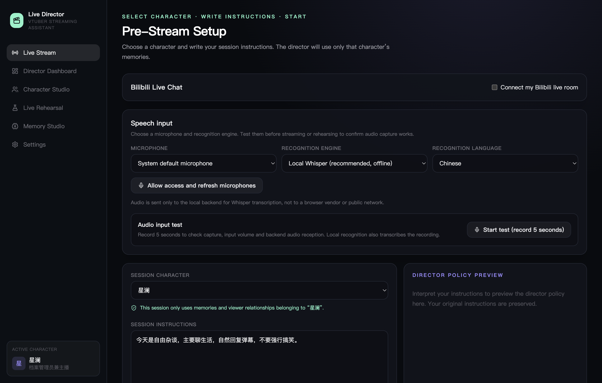
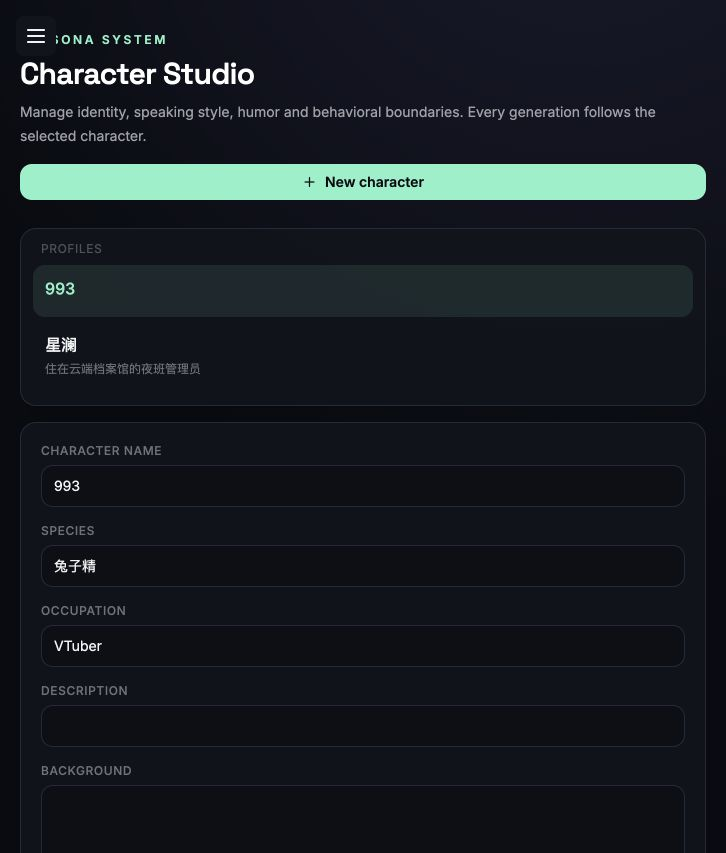
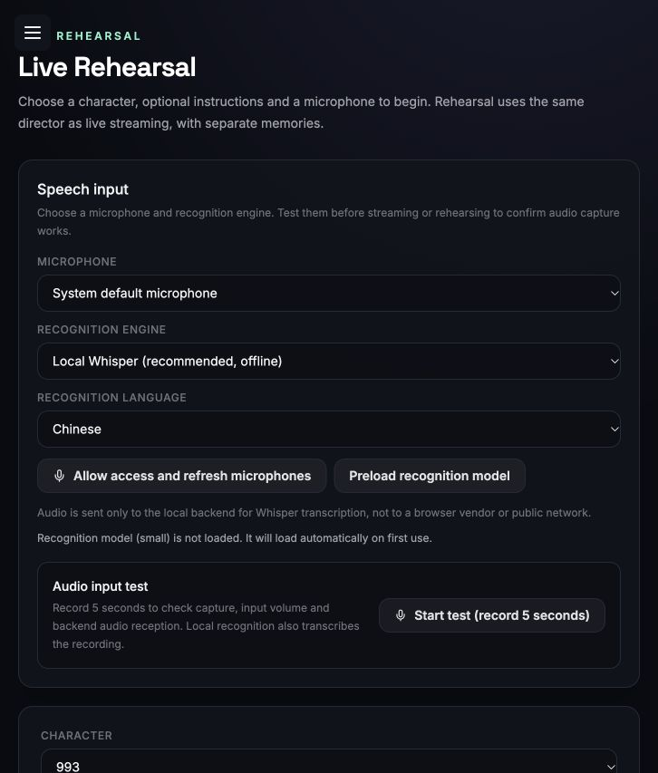
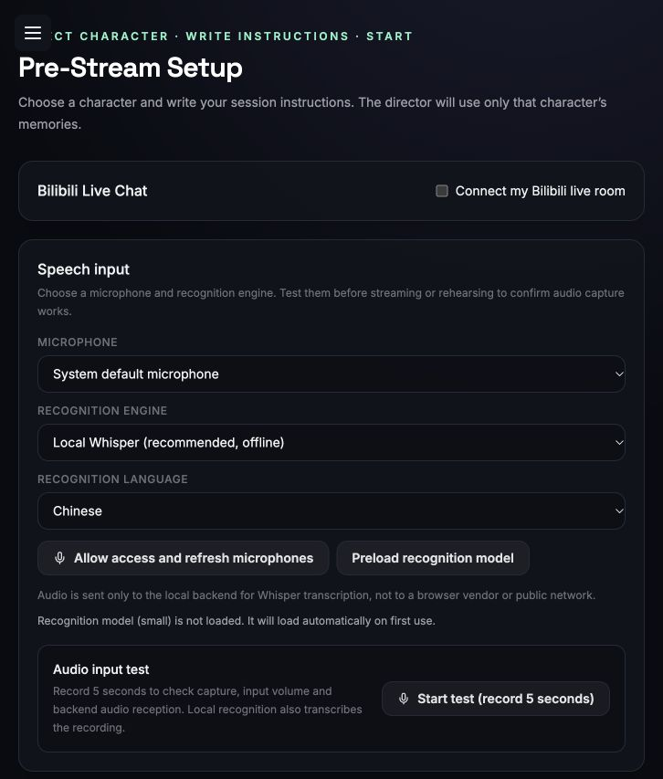

Understand the moment
Local speech recognition distinguishes reading, paraphrasing, improvising, questions, topic changes, singing, and silence.
A local-first AI director that listens to your performance, tracks your script, reads the room, and prepares what comes next—without taking over your voice.

The director turns real speech and audience signals into an adaptive script buffer. You stay present on camera while the system quietly handles the next beat.
Local speech recognition distinguishes reading, paraphrasing, improvising, questions, topic changes, singing, and silence.
Audience activity, character rules, memories, recent topics, and your session instructions shape the director’s next decision.
Upcoming segments are buffered ahead of your reading speed. New signals update future lines without disturbing the words already on screen.
Plan the character, rehearse the room, then go live with the same director and deliberately separated memory environments.

Define identity, worldview, speaking rhythm, humor, hard boundaries, and example dialogue. Every generation stays scoped to the character you selected.

Rehearse with simulated audience activity and your real microphone. The production director is the same; rehearsal memories stay in their own sandbox.

Describe the format, energy, restrictions, and interaction style. The app interprets your note into a director policy that you can review before you start.
Download the desktop app, connect a model, and run your first rehearsal.